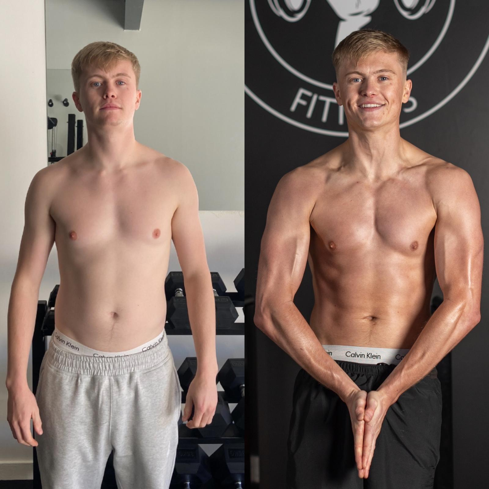

TRANSFORMATION 01
Sam
Sam had been training with me for a long time. For years, he’d taken an all-or-nothing approach to training and nutrition, which made it hard to keep going consistently.
We tailored his training and nutrition around what he could sustain. His progress took time, but he stuck with it and got into the best shape of his life.
